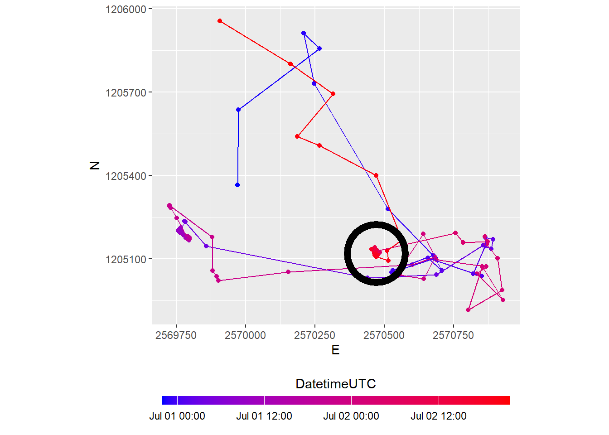
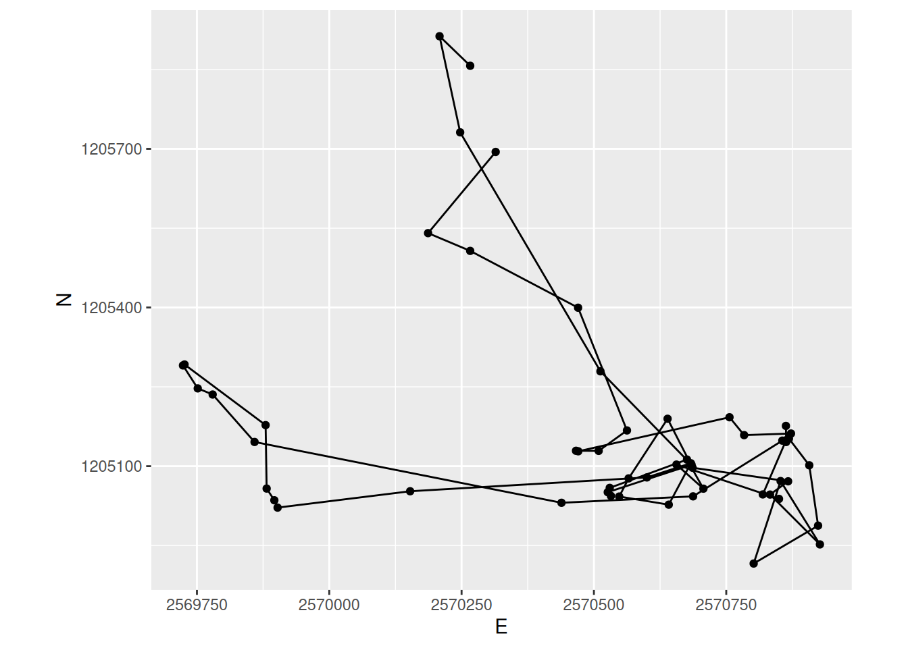
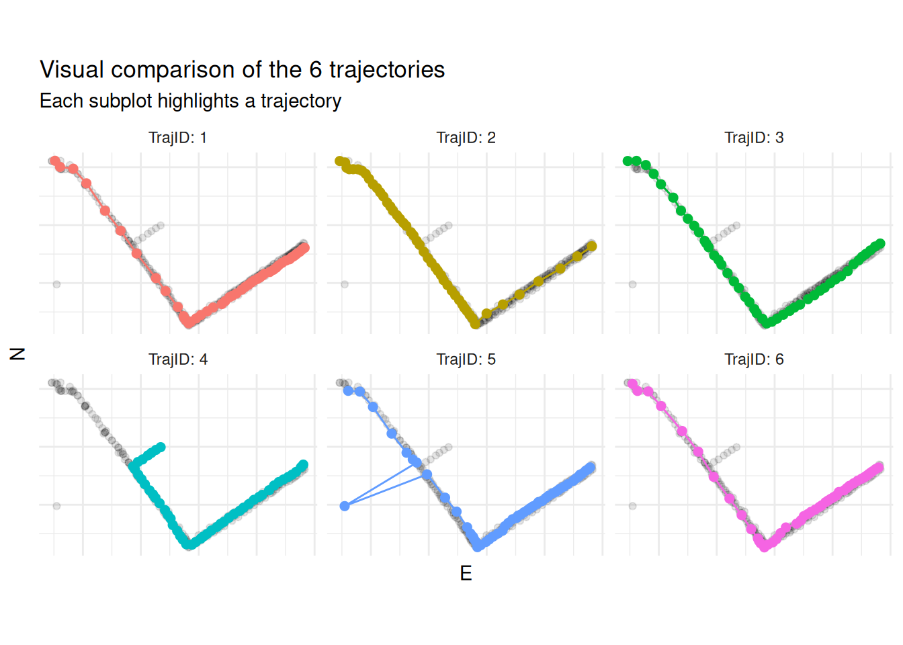
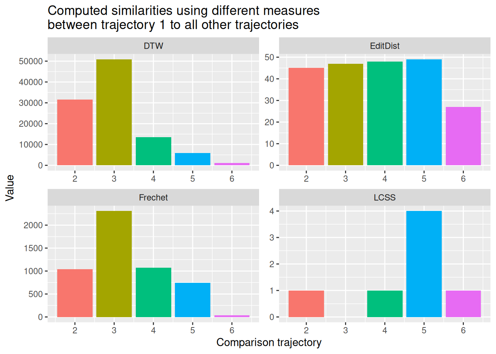

library("readr")
library("dplyr")
library("sf")
wildschwein <- read_delim("datasets/wildschwein_BE_2056.csv", ",")
# Careful! What Timezone is assumed?
sabi <- wildschwein |>
st_as_sf(coords = c("E", "N"), crs = 2056, remove = FALSE) |>
filter(TierName == "Sabi", DatetimeUTC >= "2015-07-01", DatetimeUTC < "2015-07-03")Tasks and Inputs
Input
You’ve read Laube and Purves (2011) about segmenting trajectories. In the paper, the authors define “static” fixes as “those whose average Euclidean distance to other fixes inside a temporal window v is less than some threshold d”, as illustrated in Figure 15.1

- Specify a temporal windows \(v\) for in which to measure Euclidean distances.
- Measure the distance from every point to every other point within this temporal window \(v\).
- Remove “static points”: These are points where the average distance is less than a given threshold. This segments the trajectory into subtrajectories.
- Now remove short subtrajectories: These are trajectories with a short duration (whereas “short” is tbd).
We will demonstrate implementing this method on the wild boar “Sabi”, restricting ourselves to a couple of tracking days. Your task will be to understand this implementation and apply it to your own movement data.
Open the RStudio Project you have prepared for this week. Next, copy the wild boar data you downloaded last week (wildschwein_BE_2056.csv) to your project folder. If you cannot find this dataset on your computer, you can re-download it here. Transform the data into an sf object, filter for the wildboar Sabi and a datetime between “2015-07-01” and “2015-07-03”.

Step a): Specify a temporal window \(v\)
In the above dataset, the sampling interval is 15 minutes. If we take a temporal window of 60 minutes, that would mean including 4 fixes. We need to calculate the following Euclidean distances (pos representing single location):
pos[n-2]topos[n]pos[n-1]topos[n]pos[n]topos[n+1]pos[n]topos[n+2]
Step b): Measure the distance from every point to every other point within this temporal window \(v\)
We can use the function distance_by_element from week 2 in combination with lead() and lag() to calculate the Euclidean distance. For example, to create the necessary offset of n-2, we use lag(x, 2). For each offset, we create one individual column.
distance_by_element <- function(later, now) {
as.numeric(
st_distance(later, now, by_element = TRUE)
)
}
sabi <- sabi |>
mutate(
nMinus2 = distance_by_element(lag(geometry, 2), geometry), # distance to pos -30 minutes
nMinus1 = distance_by_element(lag(geometry, 1), geometry), # distance to pos -15 minutes
nPlus1 = distance_by_element(geometry, lead(geometry, 1)), # distance to pos +15 mintues
nPlus2 = distance_by_element(geometry, lead(geometry, 2)) # distance to pos +30 minutes
)Now we want to calculate the mean distance of nMinus2, nMinus1, nPlus1, nPlus2 for each row. Since we want the mean value per Row, we have to explicitly specify this before mutate() with the function rowwise(). To remove this rowwise-grouping, we end the operation with ungroup().
Note that for the first two positions, we cannot calculate a stepMean since there is no Position n-2 for these positions. This is also true for the last to positions (lacking a position n+2).
sabi <- sabi |>
rowwise() |>
mutate(
stepMean = mean(c(nMinus2, nMinus1, nPlus1, nPlus2))
) |>
ungroup()
sabiSimple feature collection with 192 features and 11 fields
Geometry type: POINT
Dimension: XY
Bounding box: xmin: 2569724 ymin: 1204916 xmax: 2570927 ymax: 1205957
Projected CRS: CH1903+ / LV95
# A tibble: 192 × 12
TierID TierName CollarID DatetimeUTC E N
<chr> <chr> <dbl> <dttm> <dbl> <dbl>
1 002A Sabi 12275 2015-06-30 22:00:13 2569972. 1205366.
2 002A Sabi 12275 2015-06-30 22:16:06 2569975. 1205637.
3 002A Sabi 12275 2015-06-30 22:30:19 2570266. 1205857.
4 002A Sabi 12275 2015-06-30 22:45:13 2570208. 1205913.
5 002A Sabi 12275 2015-06-30 23:00:10 2570247. 1205731.
6 002A Sabi 12275 2015-06-30 23:15:17 2570512. 1205279.
7 002A Sabi 12275 2015-06-30 23:30:38 2570684. 1205103.
8 002A Sabi 12275 2015-06-30 23:45:16 2570526. 1205051.
9 002A Sabi 12275 2015-07-01 00:00:10 2570532. 1205044.
10 002A Sabi 12275 2015-07-01 00:15:14 2570530. 1205059.
# ℹ 182 more rows
# ℹ 6 more variables: geometry <POINT [m]>, nMinus2 <dbl>, nMinus1 <dbl>,
# nPlus1 <dbl>, nPlus2 <dbl>, stepMean <dbl>Step c): Remove “static points”
We can now determine if an animal is moving or not by specifying a threshold distance on stepMean. In our example, we use the mean value as a threshold: Positions with distances below this value are considered static.
sabi <- sabi |>
mutate(static = stepMean < mean(stepMean, na.rm = TRUE))
sabi_filter <- sabi |>
filter(!static)
sabi_filter |>
ggplot(aes(E, N)) +
geom_path() +
geom_point() +
coord_fixed() +
theme(legend.position = "bottom")
Preperation
With the skills from the input above you can now implement the segmentation algorithm described in Laube and Purves (2011) to your own movement data. Export your data from your provider and import is as a data.frame in R.
As before, we will calculate the euclidean distance “by hand”. Complete the following preparations in order to start the calculations:
- We need the coordinates of our locations stored in a Projected CRS. Check in which coordinate reference system your data is stored and if necessairy transform it to EPSG 2056 with the function
st_transform, as we explained in the first week. You have already done this in week 2. - To be able to compute Euclidean distances by hand, we need the coordinates stored in separate columns. The function
st_coordinatesextracts the coordinates from oursfobject. We can bind these coordinates back to oursfobject usingcbind. - Explore your data and choose a single day for the next steps.
Once you have completed this prepartions, commit your changes with a meaningful commit message. Before committing, make sure your location data is ignored! Then, test your connection to Github by pushing your changes to your remote repository.
Task 1: Segmentation
Now, you can implement steps a) and b), which you had used with sabi, on on your own movement data. Once you have completed the task, commit your changes with a meaningful commit message and test your connection to Github by pushing your changes to your remote repository.
Task 2: Specify and apply threshold d
After calculating the Euclidean distances to positions within the temporal window v in task 1, you can explore these values (we stored them in the column stepMean) using summary statistics (histograms, boxplot, summary()): This way we can define a reasonable threshold value to differentiate between stops and moves. There is no “correct” way of doing this, specifying a threshold always depends on data as well as the question that needs to be answered. In this exercise, use the mean of all stepMean values.
Store the new information (boolean to differentiate between stops (TRUE) and moves (FALSE)) in a new column named static.
Commit your changes with a meaningful commit message.
Task 3: Visualize segmented trajectories
Now visualize the segmented trajectory spatially. Just like last week, you can use ggplot with geom_path(), geom_point() and coord_equal(). Assign colour = static within aes() to distinguish between segments with “movement” and without.
Commit your changes with a meaningful commit message.
Task 4: Segment-based analysis
In applying Laube and Purves (2011), we’ve come as far as step b) in Figure 15.1. In order to complete the last steps (c and d), we need a unique ID for each segment that we can use as a grouping variable. The following function does just that (it assigns unique IDs based on the column static which you created in Task 2). You will learn about functions next week. For now, just copy the following code chunk into your script and run it.
rle_id <- function(vec) {
x <- rle(vec)$lengths
as.factor(rep(seq_along(x), times = x))
}You can use the newly created function rle_id to assign unique IDs to subtrajectories (as shown below). Visualize the moving segments by colourizing them by segment_ID. Then use segment_ID as a grouping variable to determine the segments duration and remove short segments (e.g. segments with a duration < 5 Minutes)
your_data_frame <- your_data_frame |>
mutate(segment_id = rle_id(static))Commit your changes with a meaningful commit message.
Task 5: Similarity measures
We will now calculate similarties between trajectories using a new dataset pedestrian.csv. Download an import this dataset as a data.frame or tibble. It it a set of six different but similar trajectories from pedestrians walking on a path.
For this task, explore the trajectories first and get an idea on how the pedestrians moved.

Commit your changes with a meaningful commit message.
Task 6: Calculate similarity
Install the package SimilarityMeasures (install.packages("SimilarityMeasures")). Familiarize yourself with this package by skimming through the function descriptions help(package = "SimilarityMeasures"). Now compare trajectory 1 to trajectories 2-6 using different similarity measures from the package. Your options are. DTW, EditDist, Frechet and LCSS.
Before visualizing your results think about the following: Which two trajectories to you percieve to be most similar, which are most dissimilar? Now visualize the results from the computed similarity measures. Which measure reflects your own intuition the closest?
Note:
- All functions in the package need matrices as input, with one trajectory per matrix.
LCSStakes very long to compute. The accuracy of the algorithm (pointSpacing =,pointDistance =anderrorMarg =) can be varied to provide faster calculations. Please see Vlachos, Gunopoulos, and Kollios (2002) for more information.

Commit your changes with a meaningful commit message. Now push all your changes to Github.